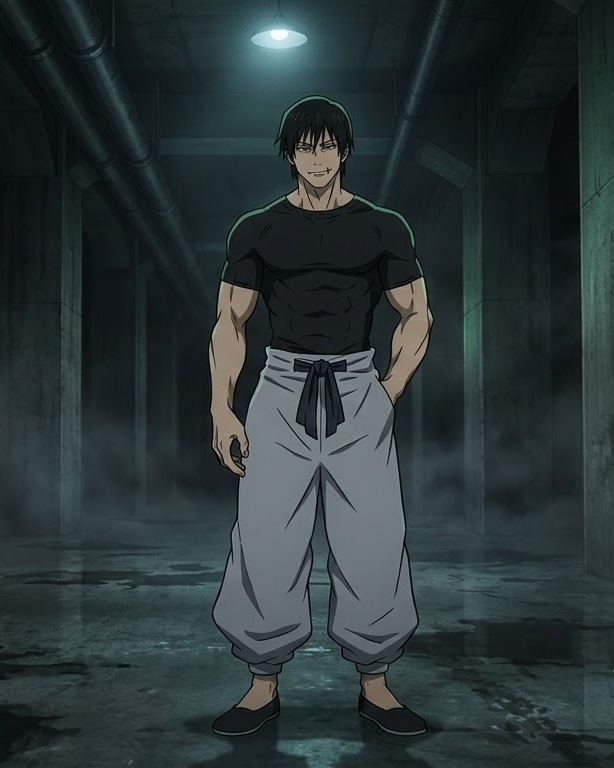
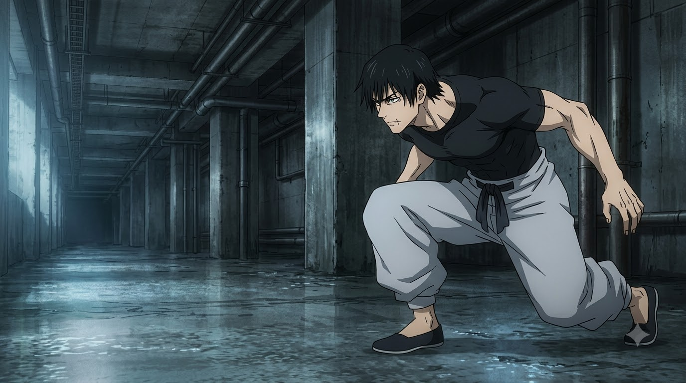
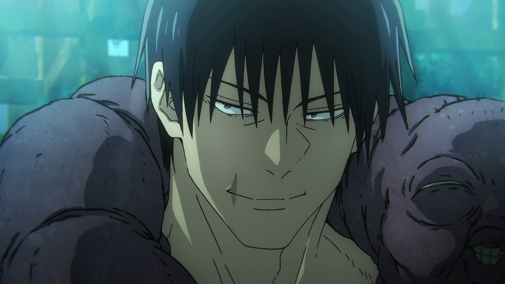

術師殺し · THE SORCERER KILLER
伏黒甚爾
T O J I F U S H I G U R O
FRAME 001 / 071
SCROLL TO ADVANCE

天与呪縛 · ZERO CURSED ENERGY
THE ANOMALY 呪いを持たぬ鬼才
Completely untraceable to barrier techniques and six-eyes detection. Toji moves without leaving a single trace of cursed energy. Sweep your cursor through him to disperse his form; he reassembles with instant physical reflex.
0.00
呪力 · CURSED ENERGY
100%
肉体 · PHYSICAL RESTRAINT
2
特級 · SPECIAL GRADES HUNTED
特級呪具 · CURSED ARSENAL
CHAIN OF A THOUSAND MILES
Stored within his invisible inventory curse. Connected to the Inverted Spear of Heaven, the chain extends indefinitely so long as the back end remains concealed. Drag or use arrow keys to scrub through the strike arc.
POSITION 00%
FRAME 001 / 033
DRAG / SWIPE / USE [LEFT / RIGHT ARROWS]

0.00 ms · DISPLACEMENT

審判 · THE AFTERMATH
「運が良かったな。 お前が五条悟じゃなくて。」
SORCERER KILLER · REST IN CALM